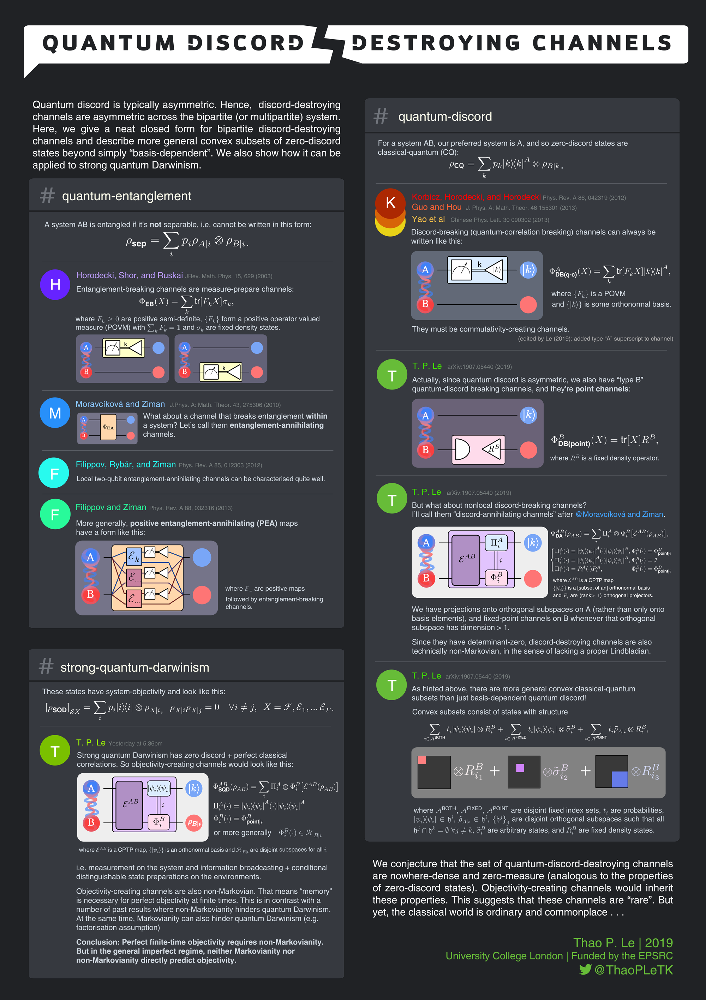

The following poster was presented at the 5th International Conference for Young Quantum Information Scientists, Sopot, on the 25th - 27th September 2019.. The corresponding paper for this work is Quantum discord-breaking and discord-annihilating channels.

| 2019
University College London | Funded by the EPSRC
twitter @ ThaoPLeTK
Quantum discord is typically asymmetric. Hence, discord-destroying channels are asymmetric across the bipartite (or multipartite) system. Here, we give a neat closed form for bipartite discord-destroying channels and describe more general convex subsets of zero-discord states beyond simply "basis-dependent". We also show how it can be applied to strong quantum Darwinism.
A system AB is entangled if it's not separable, i.e. cannot be written in this form:
\( \rho_{\text{sep}} = \sum_i p_i \rho_{A|i} \otimes \rho_{B|i} \).
Entanglement-breaking channels are measure-prepare channels:
\( \Phi_{\text{EB}}(X) = \sum_k \text{tr}[F_k X] \sigma_k\),
where \(F_k \geq 0\) are positive semi-definite, \(\{F_k \} \) form a positive operator valued measure (POVM) with \( \sum_k F_k = \mathbb{1} \) and \(\sigma_k \) are fixed density states.
Figure: Two circuit diagrams showing that an entanglement breaking channel can be applied on any subsystem (A or B) to work. Each circuit diagram starts with a general, entangled system AB, and at the end of the circuit, A and B are now separable. In the first diagram, there is an entanglement-breaking channel on A. In the second diagram, there is an entanglement-breaking channel on B. The entanglement-breaking channel is composed of measurement and state-preparation.
What about a channel that breaks entanglement within a system? Let's call them entanglement-annihilating channels.
Figure: A circuit diagram that starts with a general, entangled system AB, ends with a separable AB, and in-between is a channel \(\Phi_{\text{EA}}\) that acts nonlocally/globally on A and B.
Local two-qubit entanglement-annihilating channels can be characterised quite well.
More generally, positive entanglement-annihilating (PEA) maps have a form like this:
Figure: A circuit diagram that starts with a general, entangled system AB, ends with a separable AB, and in-between is a channel that acts on A and B. The channel is composed of multiple general positive maps \(\mathcal{E}_k\), followed by entanglement-breaking channels (measurement and prepare) that act on one subsystem.
where \(\mathcal{E}_{...} \) are positive maps, followed by entanglement-breaking channels.
For a system AB, our preferred system is A, and so zero-discord states are classical-quantum (CQ):
\(\rho_\text{CQ} = \sum_k p_k |k\rangle \langle k|^A \otimes \rho_{B|k} \).
Discord-breaking (quantum-correlation breaking) channels can always be written like this:
\( \Phi_{\text{DB(q-c)}}^{A} (X) = \sum_k \text{tr}[F_k X] |k\rangle \langle k|^A \),
where \(\{F_k\}\) is a POVM and \(\{|k\rangle\}\) is some orthonormal basis.
Figure: A circuit diagram that starts with a general, entangled system AB, ends with a classical-quantum AB. In-between is a discord-breaking channel that acts only on A: consisting of measurement and pure-orthogonal state preparation \(|k\rangle\) conditional on measurement outcome \(k\).
They must be commutativity-creating channels.
(edited by Le (2019): added type "A" superscript to channel)
Actually, since quantum discord is asymmetric, we also have "type B" quantum-discord breaking channels, and they're point channels:
\( \Phi_{\text{DB(point)}}^{B} (X) = \text{tr}[X] R^B\),
where \(R^B\) is a fixed density operator.
Figure: A circuit diagram that starts with a general, entangled system AB, ends with a classical-quantum AB. In-between is a discord-breaking channel that acts only on B: it discards the original B state and prepares a fixed state, \(R^B\).
But what about nonlocal discord-breaking channels?
I'll call them "discord-annihilating channels" after @Moravčíková and Ziman.
\( \Phi_{\text{DA}}^{AB} (\rho_{AB}) = \sum_i \Pi_i^A \otimes \Phi_i^B [\mathcal{E}^{AB}(\rho_{AB})] \),
\( \Pi_i^A(\cdot) = |\psi_i\rangle\langle \psi_i|^A (\cdot) |\psi_i\rangle\langle \psi|^A \), \( \Phi_i^B (\cdot) = \Phi_{\text{point}|i}^B \)
\( \Pi_i^A(\cdot) = |\psi_i\rangle\langle \psi_i|^A (\cdot) |\psi_i\rangle\langle \psi|^A \), \( \Phi_i^B (\cdot) = \mathcal{I} \)
\( \Pi_i^A(\cdot) =P_i^A (\cdot)P_i^A \), \( \Phi_i^B (\cdot) = \Phi_{\text{point}|i}^B \)
where \(\mathcal{E}^{AB}\) is a CPTP map
\(\{|\psi_i\rangle\}\) is a [subset of an] orthonormal basis
and \(P_i\) are (rank \(>1\)) orthogonal projectors.
Figure: A circuit diagram that starts with a general, entangled system AB, ends with a classical-quantum AB. In-between is a discord-annihilating channel that acts on A and B: there is first a general channel on A and B, followed by projections on A, and conditional (on the result) channels on B.
We have projections onto orthogonal subspaces on A (rather than only onto basis elements), and fixed-pointed channels on B whenever that orthogonal subspace has dimension \(>1\).
Since they have determinant-zero, discord-destroying channels are also technically non-Markovian, in the sense of lacking a proper Lindbladian.
As hinted above, there are more general convex classical-quantum subsets than just basis-dependent quantum discord!
Convex subsets consist of states with structure
\( \sum_{i\in\mathcal{A}^{\text{BOTH}}} t_i |\psi_i\rangle\langle \psi_i|\otimes R_i^B + \sum_{i\in\mathcal{A}^{\text{FIXED}}} t_i |\psi_i\rangle\langle \psi_i|\otimes \tilde{\sigma}_i^B + \sum_{i\in\mathcal{A}^{\text{POINT}}} t_i \tilde{\rho}_{A|i} \otimes R_i^B \),
where \(\mathcal{A}^{\text{BOTH}}\), \(\mathcal{A}^{\text{FIXED}}\), \(\mathcal{A}^{\text{POINT}}\) are disjoint fixed index sets, \(t_i\) are probabilities, \(|\psi_i\rangle\langle \psi_i|\in h^i\), \(\tilde{\rho}_{A|i}\in h^i\), \(\{h^j\}_j\) are disjoint orthogonal subspaces such that all \(h^j \cap h^k = \emptyset \forall j\neq k\), \(\tilde{\sigma}_i^B\) are arbitrary states and \(R_i^B\) are fixed density states.
Figure: diagram of particular state structure: a box with a coloured square on the top left (of the diagonal), tensor with fixed state \(R_{i_1}^B\), plus a box with a coloured square lower down in the diagaonl tensor with a general state \(\tilde{\sigma}_{i_2}^B\), plus a box with a coloured square twice-as-large at the bottom right corner tensor with a fixed state \(R_{i_3}^B\).
These states have system-objectivity and look like this:
\( [\rho_\text{SQD}]_{\mathcal{S}X} = \sum_i p_i |i\rangle \langle i|\otimes \rho_{X|i}\), \(\rho_{X|i}\rho_{X|j}=0 \forall i\neq j\), \(X=\mathcal{F},\mathcal{E}_1,\ldots\mathcal{E}_F\).
Strong quantum Darwinism has zero discord + perfect classical correlations. So objectivity-creating channels would look like this:
\( \Phi_{\text{DA}}^{AB} (\rho_{AB}) = \sum_i \Pi_i^A \otimes \Phi_i^B [\mathcal{E}^{AB}(\rho_{AB})] \),
\( \Pi_i^A(\cdot) = |\psi_i\rangle\langle \psi_i|^A (\cdot) |\psi_i\rangle\langle \psi|^A \)
\( \Phi_i^B (\cdot) = \Phi_{\text{point}|i}^B \)
or more generally, \(\Phi_i^B(\cdot) \in \mathcal{H}_{B|i}\)
where \(\mathcal{E}^{AB}\) is a CPTP map, \(\{|\psi_i\rangle\}\) is an orthonormal basis and \(\mathcal{H}_{B|i}\) are disjoint subspaces for all \(i\).
Figure: A circuit diagram that starts with a general, entangled system AB, ends with an objective system A with "environment" B. In-between is an objectivity-creating channel that acts on A and B: there is first a general channel on A and B, followed by rank-1 projections on A, and conditional (on the result) channels on B.
i.e. measurement on the system and information broadcasting + conditional state preparations on the environments.
Objectivity-creating channels are also non-Markovian. That means "memory" is necessary for perfect objectivity at finite times. This is in contrast with a number of past results where non-Markovianity hinders quantum Darwinism (e.g. factorisation assumption).
Conclusion: Perfect finite-time objectivity requires non-Markovianity. But in the general imperfect regime, neither Markovianity nor non-Markovianity directly predict objectivity.
We conjecture that the set of quantum-discord-destroying channels are nowhere-dense and zero-measure (analogous to the properties of zero-discord states). Objectivity-creating channels would inherit these properties. This suggests that these channels are "rare". But yet, the classical world is ordinary and commonplace...
{kind=link}